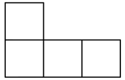
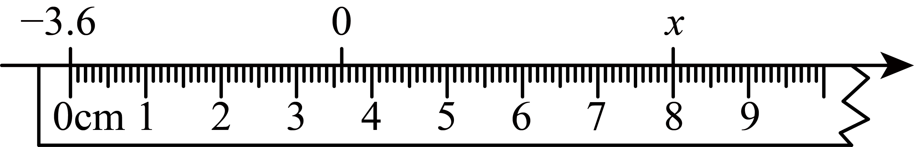
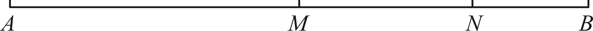
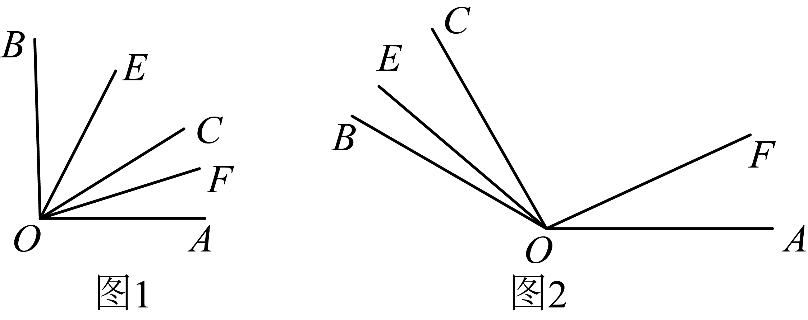
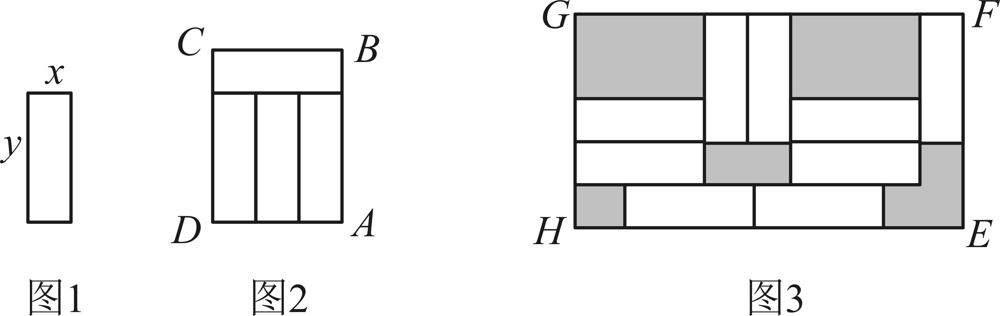

七年级数学上学期期末模拟卷·培优卷
【北师大版2024】
姓名：___________班级：___________考号：___________
考卷信息：
本卷试题共25题，单选10题，填空6题，解答9题，满分120分，限时120分钟，本卷题型针对性较高，覆盖面广，选题有深度，可量化学生的掌握程度！
一、选择题（本大题共10小题，每小题3分，满分30分）
1．（25-26六年级上·全国·期末）数据划分成定量数据和定性数据两种，以下几种数据中，属于定性数据的是（ ）
A．性别 B．年龄
C．平均成绩 D．体重
2．（25-26七年级上·广东佛山·月考）如图，是由5个大小相同的正方体组成的立体图形，从左面看到的形状图是（ ）
A． B．

C． D．
3．（25-26七年级上·广西南宁·期中）中国是世界上最早使用负数的国家，战国时期李悝所著的《法经》中已使用负数．如果公元前600年记作−600年，则公元2025年记作（ ）
A．−2025年 B．2025年 C．−2625年 D．2625年
4．（25-26七年级上·黑龙江哈尔滨·期中）如果m=n，下列运用等式的性质进行的变形中，不正确的是（ ）
A．m+a=n+a B．m−a=n−a C．am=an D．ma=na
5．（25-26七年级上·重庆长寿·期中）下列每组单项式中是同类项的是（ ）
A．−2ab2与3a2b B．−13ba与3ab C． 3b与−12a D．ab与bc
6．（25-26七年级上·河南商丘·期中）将一把刻度尺按如图所示放在数轴上，刻度尺上的0和8分别对应着数轴上的−3.6和x，则x的值是（ ）

A．4.4 B．4.3 C．4.2 D．4.1
7．（25-26七年级上·广东汕头·月考）已知关于x的方程2x+8=−6与2x−3a=−5的解相同，则a的值为（ ）
A．−3 B．3 C．8 D．15
8．（25-26七年级上·山东滨州·期中）若关于x的多项式8x2+x减去多项式mx2+5x+3的若干倍，其结果为常数项，则其运算结果是（ ）
A．1 B．35 C．15 D．−35
9．（24-25七年级上·河北石家庄·期中）如图，已知线段AB=10cm，M是AB中点，点N在MB上，MN:NB=3:2，那么线段MN的长为（ ）

A．5cm B．4cm C．3cm D．2cm
10．（24-25六年级下·山东泰安·期末）如图，在同一平面内，点O在直线AB上，用三角尺画∠COD，使∠COD=90°；用尺规画射线OE，使OE平分∠BOC．若∠AOD=130°，∠DOE的度数是（ ）

A．50° B．60° C．70° D．80°
二、填空题（本大题共6小题，每小题3分，满分18分）
11．（25-26八年级上·北京·期中）比较大小：−78 −67，−−5 −−5（填“>”“=”或“<”）
12．检测“嫦娥六号”登月探测器零件的质量，适合采用 （填“普查”或“抽样调查”）．
13．（25-26七年级上·河北邯郸·期中）写出一个含有x的代数式 ，使其满足无论x取何值，这个代数式的值总比代数式−x+2的值小．
14．（25-26七年级上·黑龙江绥化·期中）小马虎在解方程2a−x=7时把2a看成了a，解得x=5，则原方程的解为 ；
15．（25-26七年级上·四川成都·期中）如图，线段AB=10cm，点C在线段AB上，AC=6cm，点D是BC的中点，则线段BD长为 cm．

16．（25-26九年级上·重庆江津·期中）若存在一个各数位上数字均不为0的三位正整数，且三个数字相加的和为9，则称这个三位正整数为“弗玖数”，对于一个“弗玖数”P，将它的个位数字和十位数字交换以后得到新数Q，记TP=P+Q9，则T234 ；对于一个“弗玖数”P，若TP能被5整除，则满足条件的“弗玖数”P的最大值是 ．
三、解答题（本大题共9小题，满分72分）
17．（6分）（25-26七年级上·江苏宿迁·期中）计算：
(1)34+512−76×−60；
(2)−12024+−3×−13−−6．
18．（6分）（25-26七年级上·湖北·期中）解方程：
(1)2x−75−x=4+3x3；
(2)x+40.2−x−30.5=−1.6．
19．（6分）（25-26七年级上·青海西宁·期中）已知A=3x−4xy+7y,B=−3x+2xy+y．
(1)化简A−B；
(2)当x+y=12，xy=−1时，求A−B的值；
20．（8分）（25-26七年级上·云南红河·期中）2025年国庆黄金周的第一天早上，老王驾驶一辆印有“我爱昆明”字样的新能源出租车从东风广场出发，在北京路上运行载客．规定向北为正，向南为负，出租车的行驶里程（单位：km）
如下：+9，−3，−5，+4，−8，+6，−4，−6，−5，+10．
(1)老王驾驶出租车最后回到东风广场了吗？
(2)这天上午老王驾驶出租车总共行驶了多少千米？
(3)已知出租车每千米收费2.5元，那么这天早上老王共收费多少钱？
21．（8分）（24-25七年级下·甘肃武威·期末）某校举行“汉字听写 ”比赛，每位学生听写汉字 39 个，比赛结束后随机抽查部分学生的听写结果，以下是根据抽查结果绘制的统计图的一部分．
组别 | 正确字数 x | 人数 |
A | 0≤x<8 | 10 |
B | 8≤x<16 | 15 |
C | 16≤x<24 | 25 |
D | 24≤x<32 | m |
E | 32≤x<40 | n |
根据以上信息解决下列问题：
(1)在统计表中，m= ，n= ，并补全条形统计图．
(2)扇形统计图中“C 组 ”所对应的圆心角的度数是 ．
(3)若该校共有 1120 名学生，如果听写正确的个数少于 24 个定为不合格，请你估计这所学校本次比赛听写不合格的学生人数．
22．（9分）已知∠AOB内部有三条射线OE，OC，OF．

(1)如图1，若∠AOB=90°，∠AOC=36°，OE平分∠BOC，OF平分∠AOC．求∠EOF的度数；
(2)如图2，若∠AOB=150°，∠BOC=3∠BOE，2∠AOC=3∠COF，求∠EOF的度数．
23．（9分）（25-26八年级上·重庆万州·期中）十一过后随着天气逐渐变冷．空气净化器使用率增高．已知某超市经销A，B两种品牌的空气净化器，每个进价分别为3500元、4200元，售价分别为4200元、5250元．
(1)该店销售记录显示，10月份A，B两种品牌的空气净化器共售出20个，且销售A，B两种品牌的空气净化器的利润相同．该店10月份A，B两种品牌的空气净化器各售出多少个？
(2)根据实际需求，超市11月份计划购进这两种空气净化器共80个，其中A品牌m个．"双十一"超市为了促销，决定A品牌九五折销售，B品牌降价a元销售，若全部售出所获得的利润与m无关，则a的值应该为多少？
24．（10分）（25-26七年级上·湖北恩施·期中）小东同学用若干长为xcm，宽为ycm的长方形纸片（如图1）拼图，图2是由4个长方形纸片拼成的一个长方形ABCD，图3是在长方形EFGH中摆放9个长方形纸片．请你仔细观察所拼图形，解答下列问题．

(1)观察图2，直接写出x与y之间满足的关系式（用x的代数式表示y）；
(2)观察图3，请你用x的代数式表示长方形EFGH的周长；
(3)观察图3，若已知x=5cm，求图3中5个阴影图形的周长和．
25．（10分）（25-26七年级上·河南周口·期中）如图，在数轴上有A、B两点，点A表示的数为−10，点B表示的数为14，动点P从点A出发，以每秒2个单位长度的速度沿数轴向右匀速运动，设运动时间为t秒（t≥0）．

(1)当t=2时，AP= ，此时点P表示的数为 ；
(2)当PB=2AP时，求t的值；
(3)若动点Q从点B出发，以每秒1个单位长度的速度沿数轴向左匀速运动，动点P、Q同时出发，经过多少秒后，P、Q两点之间的距离为6个单位长度？